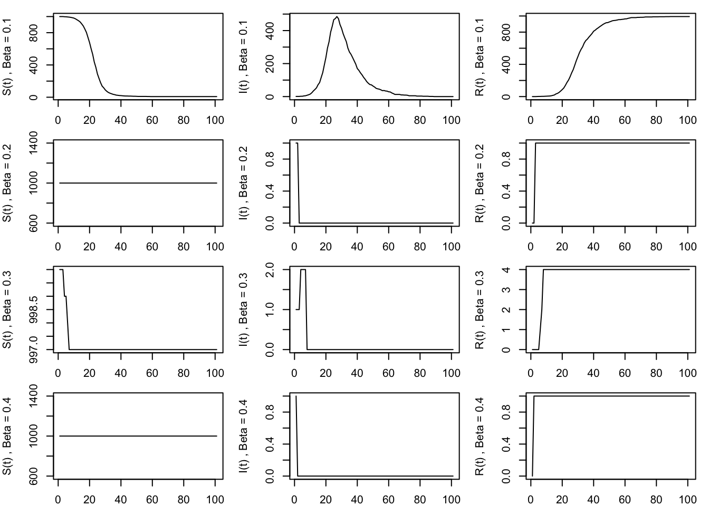
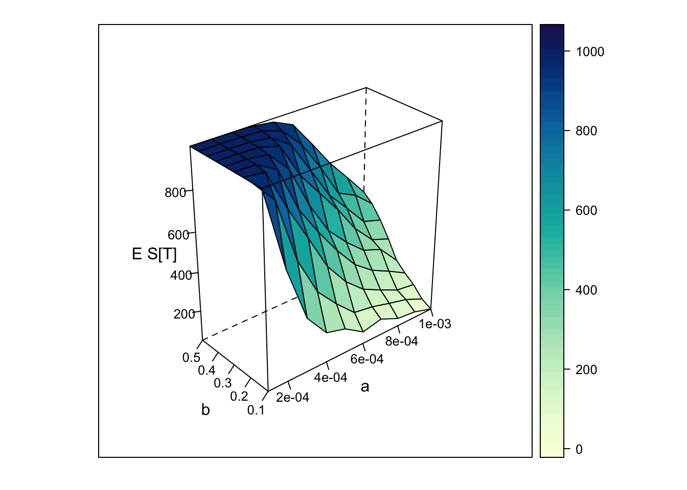
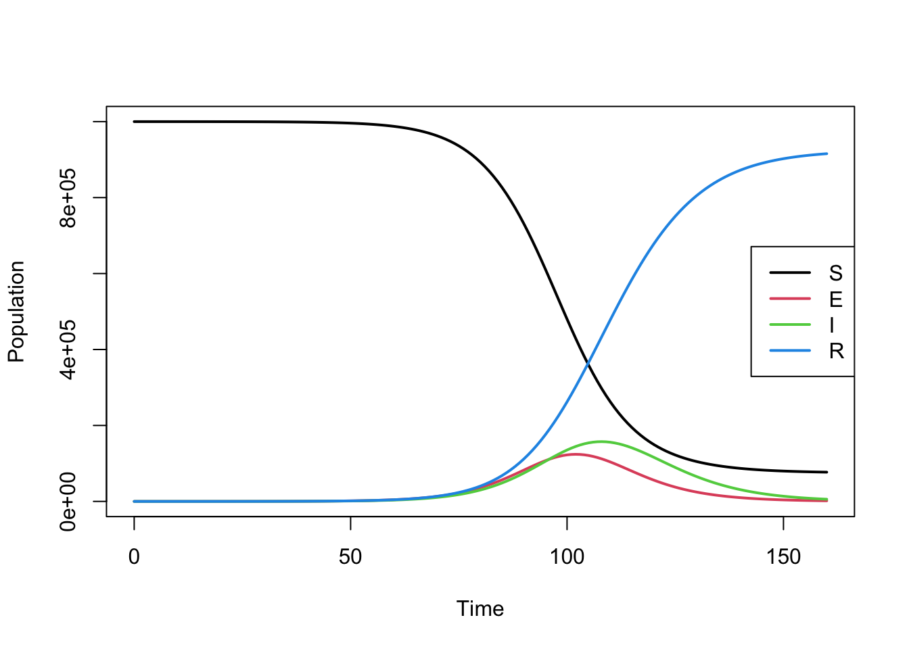
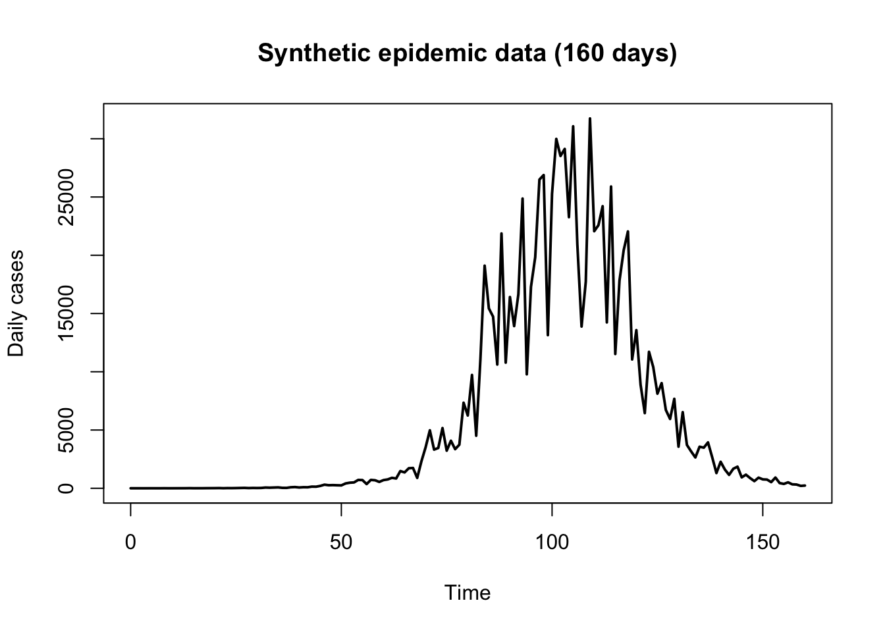
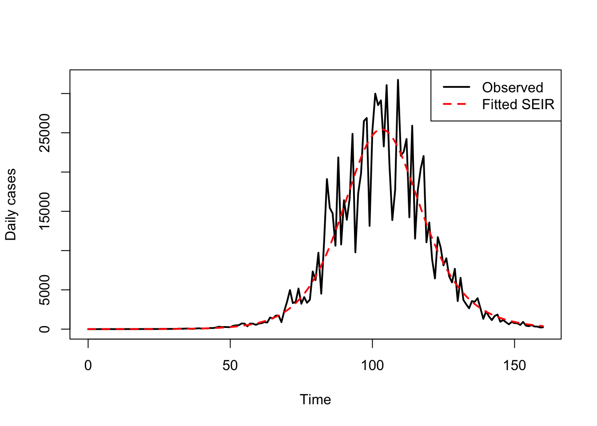
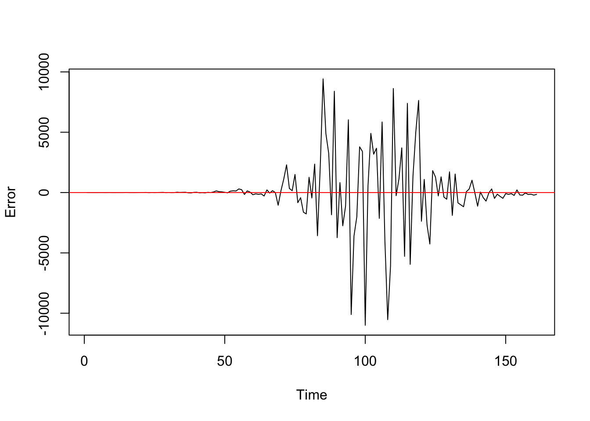

SIRsim <- function(a, b, N, T) {
# a is infection rate
# b is removal rate
# N initial susceptibles
# 1 initial infected
# simulation length = T
S <- rep(0, T+1)
I <- rep(0, T+1)
R <- rep(0, T+1)
S[1] <- N
I[1] <- 1
R[1] <- 0
for (i in 1:T) {
S[i+1] <- rbinom(1, S[i], (1 - a)^I[i])
R[i+1] <- R[i] + rbinom(1, I[i], b)
I[i+1] <- N + 1 - R[i+1] - S[i+1]
}
return(matrix(c(S, I, R), ncol = 3))
# returns a matrix size (T+1)*3 with columns S, I, R, respectively
}28 🦠 Epidemic Modelling
28.1 SIR Model
Epidemic models are used to understand how infectious diseases spread through a population. One of the simplest and most widely used frameworks is the SIR model, which classifies individuals into three groups:
- Susceptible (S): individuals who have not yet been infected
- Infected (I): individuals who are currently infectious
- Removed (R): individuals who have recovered (and are immune) or died
At any time \(t\), the population is described by \(S(t), I(t), R(t)\).
The SIR model assumes:
- Each infected individual can transmit the disease to susceptibles
- Individuals mix uniformly (equal contact with others)
- Infected individuals eventually recover or are removed
This type of model is a classic example of simulation applied to real-world problems, where analytical solutions are often difficult and simulation provides insight into system behaviour
Problem Statement
We are interested in understanding how an epidemic evolves under different conditions, and in particular:
How does the final epidemic size depend on infection and recovery rates?
The key parameters are:
- \(\alpha\): infection probability per contact
- \(\beta\): recovery/removal probability
We focus on the quantity: \[ E[S(T)] \]
the expected number of susceptible individuals at the final time \(T\).
This is directly related to the epidemic size: \[ \text{Epidemic size} = N - E[S(T)] \]
Interpretation:
- Large \(E[S(T)]\) → small outbreak
- Small \(E[S(T)]\) → large outbreak
The goal is to:
- simulate the epidemic process,
- estimate \(E[S(T)]\),
- and study how it changes across different values of \(\alpha\) and \(\beta\).
Stochastic SIR Modelling (Discrete Time)
We use a discrete-time stochastic model with:
- population size \(N = 1000\)
- initial state: \(S(0) = N, \; I(0) = 1, \; R(0) = 0\)
- simulation horizon: \(T = 100\)
At each time step:
- Each susceptible avoids infection with probability \((1 - \alpha)^{I(t)}\)
- Each infected individual recovers with probability \(\beta\)
This leads to the updates:
- \(S(t+1) \sim \text{Binomial}(S(t), (1 - \alpha)^{I(t)})\)
- \(R(t+1) = R(t) + \text{Binomial}(I(t), \beta)\)
- \(I(t+1) = N + 1 - S(t+1) - R(t+1)\)
Simulation of Epidemic Paths
We first simulate trajectories of \(S(t), I(t), R(t)\) for four separate simulations:
- \(\alpha = 0.0005\) and
- different recovery rates \(\beta = 0.1, 0.2, 0.3,\) and \(0.4.\)
beta_vals <- c(0.1, 0.2, 0.3, 0.4)
compartments <- c("S(t)", "I(t)", "R(t)")
Sims <- lapply(beta_vals, function(b) SIRsim(0.0005, b, 1000, 100))
par(mfrow = c(length(beta_vals), 3), mar = c(2, 4, 1, 1))
for (i in seq_along(Sims)) {
for (j in 1:3) {
plot(
Sims[[i]][, j],
type = "l",
ylab = paste(compartments[j], ", Beta =", beta_vals[i])
)
}
}
As β increases, infected individuals recover faster. - Faster recovery means less time spent infectious, so fewer secondary infections occur. Therefore: - The peak of \(I(t)\) becomes lower. - The epidemic ends sooner. - The final number of susceptibles \(S(T)\) is higher. - The epidemic size decreases.
Estimating Expected Epidemic Size
To estimate \(E[S(T)]\), we use Monte Carlo simulation:
- Repeat the simulation \(n = 400\) times
- Average the final number of susceptibles
For parameter explorartion, we evaluate the model over a grid of parameters:
- \(\alpha \in [0.0001, 0.001]\)
- \(\beta \in [0.1, 0.5]\)
For each pair \((\alpha, \beta)\), we estimate \(E[S(T)]\) and visualise the results using a 3D surface.
SIR <- function(a, b, N, T) {
# simulates SIR epidemic model from time 0 to T
# returns number of susceptibles, infected and removed at time T
S <- N
I <- 1
R <- 0
for (i in 1:T) {
S <- rbinom(1, S, (1 - a)^I)
R <- R + rbinom(1, I, b)
I <- N + 1 - S - R
}
return(c(S, I, R))
}
# set parameter values
N <- 1000
T <- 100
a <- seq(0.0001, 0.001, by = 0.0001)
b <- seq(0.1, 0.5, by = 0.05)
n.reps <- 400 # sample size for estimating E S[T]
f.name <- "SIR_grid.dat" # file to save simulation results
# estimate E S[T] for each combination of a and b
write(c("a", "b", "S_T"), file = f.name, ncolumns = 3)
for (i in 1:length(a)) {
for (j in 1:length(b)) {
S.sum <- 0
for (k in 1:n.reps) {
S.sum <- S.sum + SIR(a[i], b[j], N, T)[1]
}
write(c(a[i], b[j], S.sum/n.reps), file = f.name,
ncolumns = 3, append = TRUE)
}
}
# plot estimates in 3D
g <- read.table(f.name, header = TRUE)
library(lattice)
print(wireframe(S_T ~ a*b, data = g, scales = list(arrows = FALSE),
aspect = c(.5, 1), drape = TRUE,
xlab = "a", ylab = "b", zlab = "E S[T]"))
The 3D plot shows how the expected epidemic size depends jointly on infection probability and recovery probability:
epidemics grow larger when \(\alpha\) is high and \(\beta\) is low, and shrink when \(\alpha\) is low and \(\beta\) is high.
The resulting surface shows:
- Increasing \(\alpha\) → more transmission → lower \(E[S(T)]\)
- Increasing \(\beta\) → faster recovery → higher \(E[S(T)]\)
Extreme cases:
- Low \(\alpha\), high \(\beta\): epidemic barely spreads
- High \(\alpha\), low \(\beta\): large-scale outbreak
28.2 SEIR Model
Epidemic models are used to understand how infectious diseases spread through a population. A more realistic extension of the SIR model is the SEIR model, which includes an additional Exposed compartment to represent individuals who have been infected but are not yet infectious.
The population is divided into four groups:
- Susceptible (S): individuals who have not yet been infected
- Exposed (E): individuals who have been infected but are not yet infectious
- Infected (I): individuals who are currently infectious
- Removed (R): individuals who have recovered, are isolated, or died
At any time t, the population is described by \(S(t)\), \(E(t)\), \(I(t)\), \(R(t)\).
The SEIR model assumes:
- Infection occurs through contact between susceptible and infectious individuals
- Newly infected individuals enter an exposed (latent) stage before becoming infectious
- Infectious individuals are eventually removed
- Individuals mix uniformly within the population
This makes the SEIR model more suitable than SIR for diseases with a non-negligible incubation period, such as COVID-19, measles, or influenza.
Problem Statement
We are interested in understanding how a real epidemic evolves over time, and in particular:
Can we estimate the transmission and recovery parameters of an epidemic model from observed case data?
The key parameters are:
- \(\alpha\): transmission rate
- \(\beta\): recovery/removal rate
- \(\sigma\): progression rate from exposed to infectious
Since estimating all three parameters at once can be difficult, we often fix \(\sigma\) using prior medical knowledge and estimate only \(\alpha\) and \(\beta\) from the data.
Suppose we observe daily reported new cases \(Y_t\). The goal is to:
- fit the SEIR model to the observed epidemic curve,
- estimate \(\alpha\) and \(\beta\),
- and assess how well the model reproduces the data.
In this case study, the model output will be compared with real case data.
Deterministic SEIR Modelling
We use a deterministic SEIR model in continuous time:
\[ \frac{dS}{dt} = -\alpha \frac{S I}{N}, \]
\[ \frac{dE}{dt} = \alpha \frac{S I}{N} - \sigma E, \]
\[ \frac{dI}{dt} = \sigma E - \beta I, \]
\[ \frac{dR}{dt} = \beta I. \]
Here:
- \(\alpha \frac{SI}{N}\) is the rate of new infections
- \(\sigma E\) is the rate at which exposed individuals become infectious
- \(\beta I\) is the rate at which infected individuals recover or are removed
Interpretation of parameters:
- Larger \(\alpha\) means faster spread
- Larger \(\beta\) means faster recovery
- Larger \(\sigma\) means a shorter incubation period
A common interpretation is:
- \(1/\sigma\): average latent period
- \(1/\beta\): average infectious period
Solving the SEIR Model
To compare the model with real data, we solve the system numerically.
# install.packages("deSolve")
library(deSolve)
SEIR_model <- function(t, state, parameters) {
with(as.list(c(state, parameters)), {
dS <- -alpha * S * I / N
dE <- alpha * S * I / N - sigma * E
dI <- sigma * E - beta * I
dR <- beta * I
list(c(dS, dE, dI, dR))
})
}We specify the initial conditions and parameter values:
N <- 1e6
init <- c(S = N - 11, E = 10, I = 1, R = 0)
params <- c(
alpha = 0.4,
sigma = 1/5, # average latent period = 5 days
beta = 1/7, # average infectious period = 7 days
N = N
)
times <- seq(0, 160, by = 1)
out <- ode(y = init, times = times, func = SEIR_model, parms = params)
out <- as.data.frame(out)
matplot(
out$time,
out[, c("S", "E", "I", "R")],
type = "l", lty = 1, lwd = 2,
xlab = "Time", ylab = "Population"
)
legend(
"right",
legend = c("S", "E", "I", "R"),
col = 1:4, lty = 1, lwd = 2
)
This plot shows the evolution of the four compartments over time.
Linking the Model to Real Data
Suppose the observed data consist of daily reported new cases:
\[ Y_1, Y_2, \dots, Y_T \]
A simple way to connect the SEIR model to the data is to assume that the number of new infections becoming infectious at time \(t\) is approximately:
\[ \hat Y_t = \sigma E(t) \]
Thus, the model-implied daily incidence is taken to be \(\sigma E(t)\), which can be compared with the observed case counts.
In practice, it is often better to use:
- one country, state, or region,
- one clearly defined epidemic wave,
- and smoothed daily case counts.
The following code chunk is used to generate a synthetic epidemic wave.
# Model-implied daily incidence
true_cases <- params["sigma"] * out$E
# Add negative binomial noise to create synthetic observed cases
cases <- rnbinom(length(true_cases), size = 10, mu = pmax(true_cases, 1))
# Plot observed data
plot(times, cases, pch = 16, type = "l", lwd = 2,
xlab = "Time", ylab = "Daily cases",
main = "Synthetic epidemic data (160 days)")
Estimating \(\alpha\) and \(\beta\) from Data
We estimate \(\alpha\) and \(\beta\) by choosing values that make the model curve as close as possible to the observed data.
A simple least-squares criterion is:
\[ \text{SSE}(\alpha,\beta) = \sum_{t=1}^T \left(Y_t - \hat Y_t(\alpha,\beta)\right)^2 \]
where \(\hat Y_t(\alpha,\beta)\) is the model-predicted daily incidence.
Below is an example implementation:
fit_seir_sse <- function(par, cases, init, times, sigma, N) {
alpha <- unname(par[1])
beta <- unname(par[2])
params <- c(alpha = alpha, beta = beta, sigma = sigma, N = N)
out <- ode(y = init, times = times, func = SEIR_model, parms = params)
out <- as.data.frame(out)
pred_cases <- sigma * out$E
sum((cases - pred_cases)^2)
}We can then minimise the sum of squared errors:
sigma_fixed <- 1/5
fit <- optim(
par = c(alpha = 0.4, beta = 0.2),
fn = fit_seir_sse,
cases = cases,
init = init,
times = times,
sigma = sigma_fixed,
N = N,
method = "L-BFGS-B",
lower = c(0.01, 0.01),
upper = c(2, 1)
)
fit$par alpha beta
0.3542375 0.1144860 The output gives the estimated values of:
- \(\hat\alpha:\) estimated transmission rate
- \(\hat\beta:\) estimated recovery/removal rate
Comparing the Fitted Model with Data
After estimating the parameters, we solve the model again using the fitted values and compare the predicted incidence with the observed data.
est_alpha <- unname(fit$par[1])
est_beta <- unname(fit$par[2])
params_fit <- c(alpha = est_alpha, beta = est_beta, sigma = sigma_fixed, N = N)
out_fit <- ode(y = init, times = times, func = SEIR_model, parms = params_fit)
out_fit <- as.data.frame(out_fit)
pred_cases <- sigma_fixed * out_fit$E
plot(times, cases, type = "l", lwd = 2,
xlab = "Time", ylab = "Daily cases")
lines(times, pred_cases, lwd = 2, lty = 2, col="red")
legend("topright",
legend = c("Observed", "Fitted SEIR"),
lty = c(1, 2), lwd = 2, col = c("black", "red"))
This allows us to visually assess whether the fitted SEIR model captures the timing and magnitude of the epidemic wave.
Model Evaluation
After estimating the parameters, it is important to assess how well the fitted model matches the observed data.
The error (residual) at time \(t\) is: \[ e_t = Y_t - \hat{Y}_t. \]
Then, we can calculate evaluation metrics:
error_metrics <- function(cases, pred_cases) {
errors <- cases - pred_cases
list(
SSE = sum(errors^2),
MSE = mean(errors^2),
RMSE = sqrt(mean(errors^2)),
MAE = mean(abs(errors))
)
}
metrics <- error_metrics(cases, pred_cases)
metrics$SSE
[1] 1164365967
$MSE
[1] 7232087
$RMSE
[1] 2689.254
$MAE
[1] 1362.927plot(cases - pred_cases, type = "l", ylab = "Error", xlab = "Time")
abline(h = 0, col = "red")